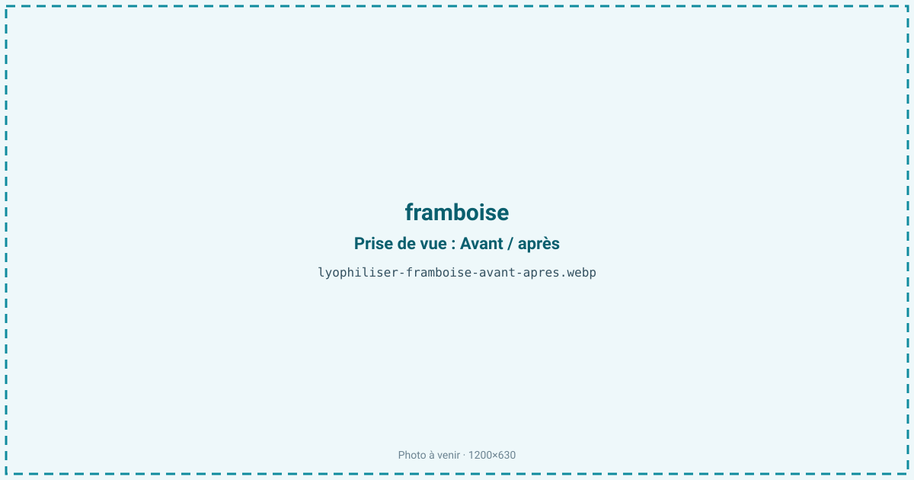
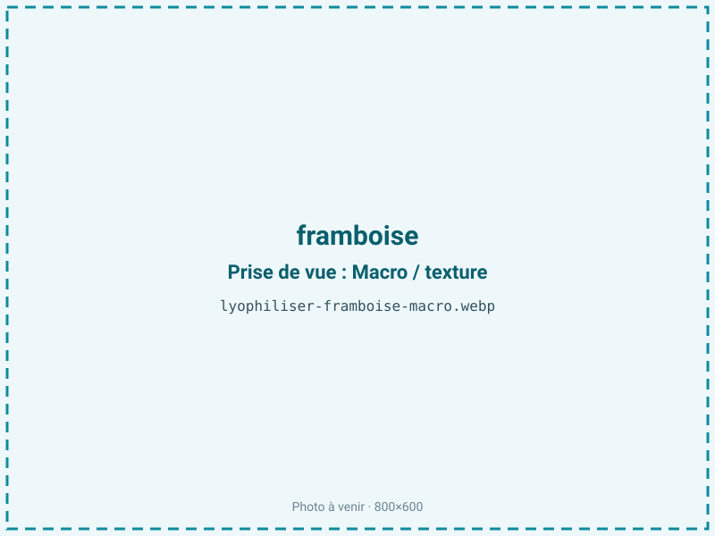
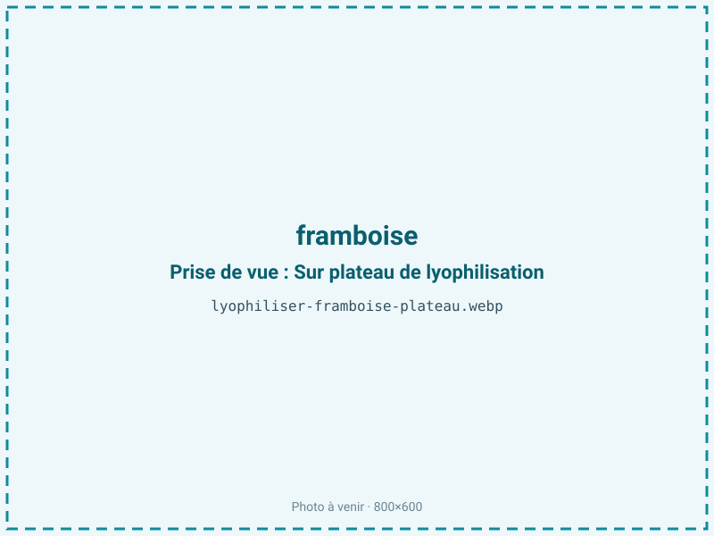
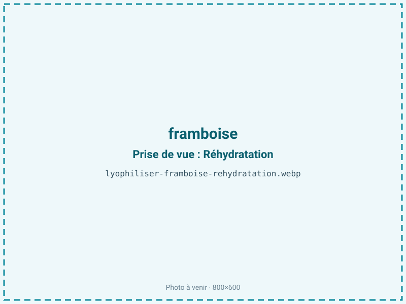

Lyophiliser des framboises
La framboise est parmi les fruits les plus fragiles : creuse, gorgée d'eau, elle s'écrase et moisit en un jour ou deux. Lyophilisée, elle devient un fruit léger et croquant qui garde sa couleur rouge intense et son arôme, avec ses akènes toujours présents, un ingrédient recherché en poudre aromatique et en décor de pâtisserie.

En bref
Comment framboise se comporte à la lyophilisation
La framboise n'est pas une baie unique mais un assemblage de petites drupéoles serrées autour d'un réceptacle creux, chacune renfermant un akène. Cette architecture, à parois minces et pleine de vides, contient environ 86 % d'eau, des sucres, des anthocyanes responsables du rouge et une forte teneur en ellagitanins et en pépins.
À la congélation, l'eau cristallise dans chaque drupéole ; à la sublimation, la structure déjà lacunaire devient très poreuse et aérée, ce qui rend le séchage relativement rapide mais donne un fruit d'une extrême fragilité — il s'émiette au moindre contact, ce qui oriente souvent vers la poudre ou le concassé plutôt que le fruit entier. Les akènes, eux, ne se déshydratent pas comme la pulpe et restent durs et croquants, un point à signaler pour les usages où ils gênent. La couleur est bien préservée car le procédé n'apporte pas de chaleur qui brunirait les anthocyanes ; ces dernières restent en revanche sensibles à la lumière et à l'oxygène après séchage.
Paramètres de cycle
La framboise se traite le plus souvent entière, sa structure creuse séchant bien sans découpe ; on peut aussi la concasser. Congeler à −30 °C pour fixer la couleur et la forme. En sublimation primaire, garder une montée en température maîtrisée : la framboise reste riche en sucres à transition vitreuse basse, et une rampe trop rapide provoquerait un léger effondrement des parois minces. La faible épaisseur utile des drupéoles raccourcit toutefois le primaire par rapport à un fruit dense.
La framboise étant maigre, sans lipides à protéger, on vise une aw basse de 0,20 à 0,30 : descendre est ici favorable à la stabilité et à la conservation des anthocyanes, sans le risque de rancissement propre aux produits gras. Le critère d'arrêt : un fruit qui sonne creux, cassant, et des parois sans zone souple résiduelle.
Pièges connus
- Fruit fragile : manipulation douce après séchage.
- Les akènes restent croquants, le préciser.



Variantes & provenance
La variété module le résultat : une framboise remontante d'automne, plus ferme, tient mieux que les variétés d'été très tendres, et il existe des framboises jaunes ou noires au profil pigmentaire différent. La maturité est décisive — trop mûre, la framboise est plus sucrée, plus fragile et s'effondre davantage ; à peine mûre, elle est plus acide et moins parfumée. On travaille aussi bien à partir de fruits frais que de framboises surgelées de qualité industrielle, souvent plus régulières. Enfin, le choix du format final, fruit entier fragile, brisures ou poudre, oriente la manipulation en fin de cycle, l'entier imposant un conditionnement très protecteur contre la casse.
Conservation & DLUO
La framboise est un fruit maigre : son facteur limitant n'est pas l'oxydation des graisses mais la reprise d'humidité et, secondairement, la dégradation des anthocyanes sous l'effet de la lumière et de l'oxygène. Une aw basse lui est donc favorable, sans le risque de rancissement des produits gras. Très hygroscopique et déjà friable, elle se ré-humidifie en quelques minutes à l'air : elle ramollit alors et perd son croquant, d'où l'importance de refermer vite et de conditionner en sachet barrière, de préférence opaque pour protéger la couleur rouge. En barrière opaque, la framboise garde couleur et arôme 12 à 24 mois à température ambiante. Pour le fruit entier, le conditionnement doit aussi amortir les chocs, tant la structure creuse est cassante.
12 à 24 mois en sachet barrière.
Estimez selon votre emballage :
Face aux autres procédés de séchage
Au séchage à l'air, la framboise creuse s'affaisse et son sucre confit lentement, loin du croquant recherché. Au séchage à chaud, elle brunit, sa structure s'écrase et une part des anthocyanes et de la vitamine C se dégrade, on obtient une baie dense et sombre. Le micro-ondes sous vide préserve mieux la couleur mais reste inférieur au froid sur ce fruit très pigmenté et fragile. La lyophilisation gagne nettement — teinte rouge éclatante, arôme intact, texture aérée — ce qui explique son emploi quasi systématique pour la poudre de framboise et les inclusions premium.
Marchés & applications
La framboise lyophilisée sert surtout en poudre aromatique et colorante naturelle (glaçages, ganaches, macarons), en décor et inclusion de pâtisserie et de chocolaterie, et en granola et barres premium. Les brisures s'intègrent aux mueslis et aux mélanges de fruits. Les clients types sont les chocolatiers et pâtissiers, les marques de petit-déjeuner et de snacking, et les industriels des préparations aromatiques qui recherchent une couleur et un goût de framboise concentrés sans arôme artificiel.
- Poudre aromatique
- Décor pâtisserie
- Granola premium
Questions fréquentes — framboise
Les akènes restent-ils dans la framboise lyophilisée ?
Oui : les pépins ne se déshydratent pas comme la pulpe et restent durs et croquants. Pour une poudre lisse, on tamise après broyage.
Pourquoi la framboise entière est-elle si fragile après séchage ?
Parce que sa structure creuse, faite de drupéoles à parois minces, devient très poreuse. Elle s'émiette au moindre contact, d'où un conditionnement protecteur ou un usage en poudre.
Garde-t-elle sa couleur ?
Oui : sans chaleur, les anthocyanes de la framboise sont préservés et la couleur reste soutenue. La couleur reste vive, surtout en sachet opaque à l'abri de la lumière.
Quel est le ratio ?
Environ 9:1 : il faut à peu près 900 g de framboises pour 100 g de fruit lyophilisé, la framboise titrant 86 % d'eau.
Peut-on partir de framboises surgelées ?
Oui, et c'est courant : les surgelées de qualité sont régulières et déjà congelées. La texture finale est très proche du frais.
Se réhydrate-t-elle ?
Partiellement, pour des coulis ou des garnitures. La plupart des usages la gardent sèche, en poudre ou en brisures, pour le croquant et l'intensité aromatique.
Combien de temps se conserve-t-elle ?
de 12 à 24 mois en sachet barrière opaque, à l'abri de la lumière, pour la framboise. Une fois ouvert, refermer vite car elle reprend l'humidité en minutes.
Prochaine étape : envoyez-nous 200 g
Vous avez les repères de la framboise. La suite logique : nous envoyer un échantillon et repartir avec une fiche technique sur votre produit — rendement, aw finale, coût au kilo.
Tester la framboise — 250 à 500 €Déductible de votre premier lot.